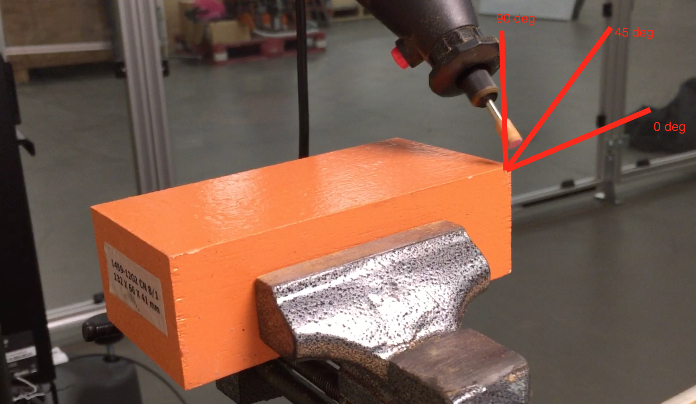
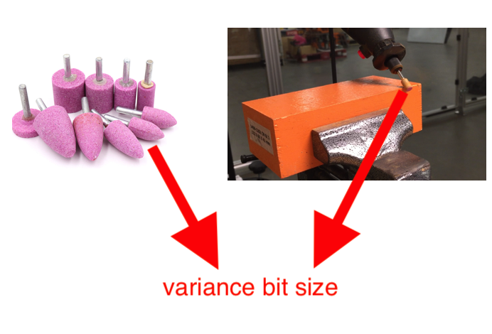
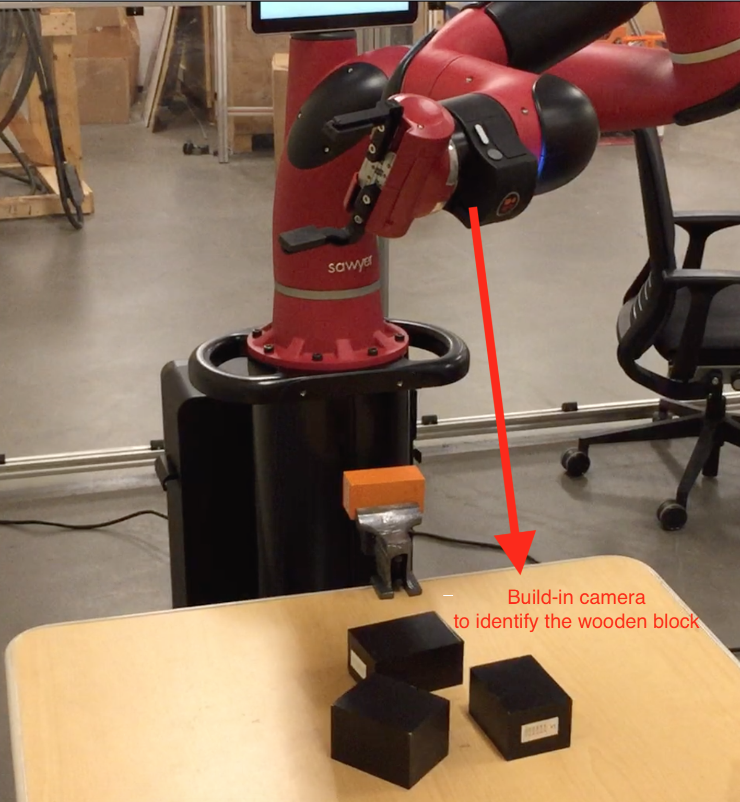
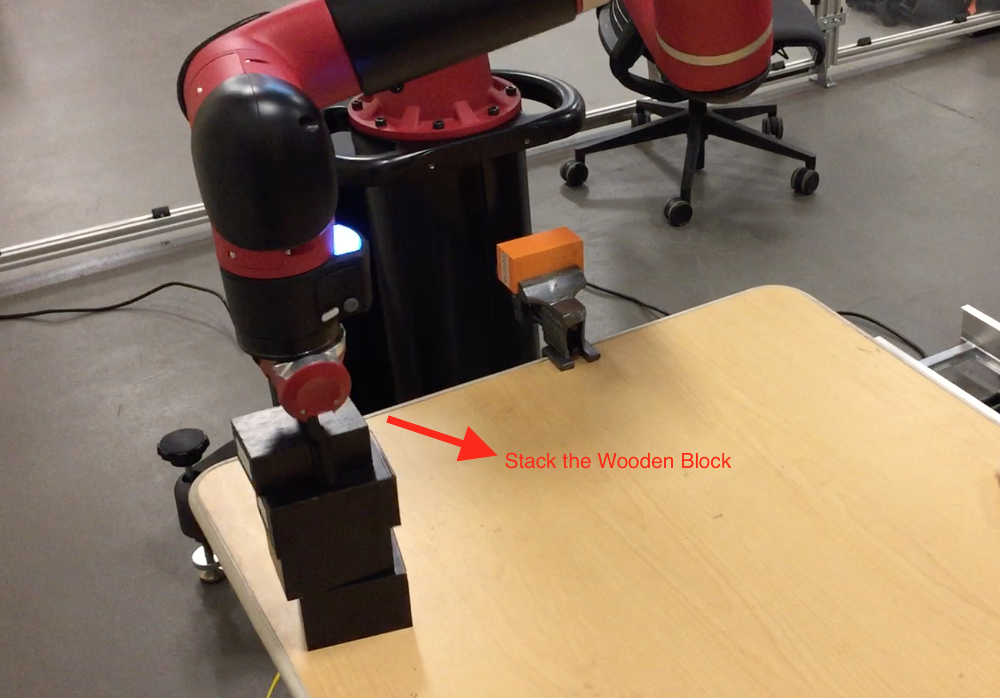

Projects > Sawyer Robot Deburring Project
Make experiments to test the deburring ability of sawyer robot.
Applied extensive robotics principles to assure critical test parameters (arm moving speed, moving type, variance cutting material, etc.) for Sawyer robots. Configured and operated robots for quantifying the accuracy of manufacturing deburring.
Analyze the location of target object using the robots’ built-in camera
Below image shows tool approach wooden with variance approach angle
with variance bit size
Below image shows the location of camera in sawyer robot
Below image shows the radio box and batteries
Below Videos shows how Sawyer robot deburring metal: Below Videos shows how Sawyer robot deburring wooden with slow moving speed model Below Videos shows how Sawyer robot deburring wooden with fast moving speed model Below Videos shows how Sawyer robot stack wooden block Lessons Learned